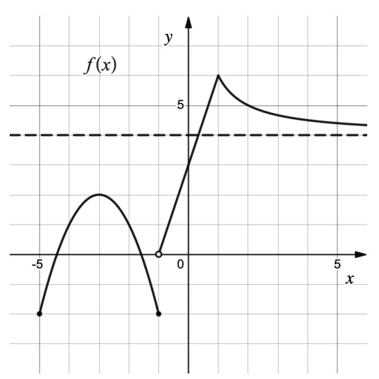

Skip to main content
Contents
Search Book
Search Results:
No results.
Embed Readability settings Prev Up Next \(\newcommand{\N}{\mathbb N}
\newcommand{\Z}{\mathbb Z}
\newcommand{\Q}{\mathbb Q}
\newcommand{\R}{\mathbb R}
\newcommand{\lt}{<}
\newcommand{\gt}{>}
\newcommand{\amp}{&}
\definecolor{fillinmathshade}{gray}{0.9}
\newcommand{\fillinmath}[1]{\mathchoice{\colorbox{fillinmathshade}{$\displaystyle \phantom{\,#1\,}$}}{\colorbox{fillinmathshade}{$\textstyle \phantom{\,#1\,}$}}{\colorbox{fillinmathshade}{$\scriptstyle \phantom{\,#1\,}$}}{\colorbox{fillinmathshade}{$\scriptscriptstyle\phantom{\,#1\,}$}}}
\)
Handout Exam 1 - Spring 2026
Section Topics
Be sure to try each question before looking at the solutions.
Exercises Questions
1. \(f\) is shown in Figure 204 . Carefully sketch the graph of \(f'\) . Be sure to clearly identify any locations at which \(f'\) does not exist.
Figure 204. The graph of \(f(x)\) is given. Sketch the graph of \(f'(x)\text{.}\)
Answer .
Figure 205. The graph of \(f(x)\) and its derivative \(f'(x)\text{.}\)
2. Figure 206 draw the graph of a function \(f(x)\) for which
\(f(-3)>0\text{,}\)
\(f'(-3)=0\text{,}\)
\(f''(-3)<0\text{,}\) and
the average rate of change of \(f\) on the interval \([-3,2]\) is negative.
Clearly label values of points on the graph at \(x=-3\) and \(x=2\text{.}\)
Figure 206. Graph a function \(f(x)\) meeting the required conditions.
Answer .
Figure 207. The graph of one function \(f(x)\) meeting the required conditions.
3. Show, by giving a specific example, that it is possible that
\(\displaystyle \lim_{x \rightarrow 0} f(x) = 1\) even though
\(f(x) >1\) for all real numbers
\(x\text{.}\) Justify your answer.
Answer .
Answers vary. For example,
\(\displaystyle f(x) = \begin{cases}1+x^{2}&{\textrm{if \ }}x<0 \\ 3&{\textrm{if \ }}x=0 \\ 1+x^{2}&{\textrm{if \ }}x>0\end{cases}\)
4.
The value \(V\) (in dollars) of a painting \(t\) years after it is purchased is modeled by
\begin{equation*}
V(t)=\frac{100t^2+50}{t}+400, \qquad 1\le t\le 5.
\end{equation*}
Find the average rate of change in the value of the painting between the first (
\(t=1\) ) and fifth (
\(t=5\) ) years. Give proper units.
In one sentence, explain the meaning of the value
\(V'(4)\) in this context. Be sure to include proper units in your response.
Answer .
\(V(1)=550\) and \(V(5)=910\text{,}\) so the average rate of change is
\begin{equation*}
AV_{[1,5]} = \frac{910-550}{5-1}=90
\end{equation*}
dollars per year.
\(V'(4)\) represents the instantaneous rate at which the value of the painting is changing, measured in dollars per year, four years after purchase.
5. Calculate each one-sided limit below or state that it does not exist. Justify your answer.
\(\displaystyle \displaystyle \lim_{x\to 0^-}\frac{-x^2+2x}{x(x-3)}\)
\(\displaystyle \displaystyle \lim_{x\to 2^-}\frac{3x-6}{|4-x^2|}\)
\(\displaystyle \displaystyle \lim_{x\to 2^+}\frac{3x-6}{|4-x^2|}\)
Answer .
\(\displaystyle \displaystyle \lim_{x \rightarrow 0^-}\frac{x^{2}+2x}{x(x-3)}= \lim_{x \rightarrow 0^-}\frac{x(x+2)}{x(x-3)}= \lim_{x \rightarrow 0^-}\frac{x+2}{x-3}= -\frac{2}{3}\)
\(\displaystyle \displaystyle \lim_{x \rightarrow 2^-}\frac{3x-6}{|4-x^{2}|}= \lim_{x \rightarrow 2^-}\frac{3(x-2)}{4-x^{2}}= \lim_{x \rightarrow 2^-}\frac{3(x-2)}{(2-x)(2+x)}= \lim_{x \rightarrow 2^-}\frac{-3}{2+x}= -\frac{3}{4}\)
\(\displaystyle \displaystyle \lim_{x \rightarrow 2^+}\frac{3x-6}{|4-x^{2}|}= \lim_{x \rightarrow 2^+}\frac{3(x-2)}{-(4-x^{2})}= \lim_{x \rightarrow 2^+}\frac{3}{x+2}= \frac{3}{4}\)
6.
During a chemical reaction, the temperature is modeled by
\(T(t)\text{,}\) measured in degrees Celsius, where time
\(t\) is measured in minutes. At
\(t=4\) minutes, the derivative is
\(T'(4)=0.8\text{.}\) Which statement correctly interprets this?
At 4 minutes, the temperature is increasing at a rate of \(0.8^\circ\text{C}\) per minute.
Correct.
The temperature increases by \(4^\circ\) every 0.8 minutes.
No. This is a rate, but not an instantaneous rate.
The temperature is \(0.8^\circ\text{C}\) at 4 minutes.
No. A derivative involves the rate of change.
Between 3 and 4 minutes, the temperature increased by exactly \(0.8^\circ\text{C}\text{.}\)
No. The rate of change should be instant and not over a time interval of 1 minute.
The temperature has increased by a total of \(0.8^\circ\text{C}\) since the reaction began.
No. This is not an instantaneous rate.
7.
The height of a rocket above the ground is
\(h(t)\text{,}\) measured in meters, at time
\(t\) seconds after launch. It is observed that
\(h''(t)=-4.2\text{.}\) Which statement correctly interprets this?
At 12 seconds, the rocket’s velocity is decreasing at a rate of 4.2 m/s per second.
Correct.
At 12 seconds, the rocket is falling back to the ground at a rate of 4.2 m/s.
No. That is \(h'(t)=-4.2\text{.}\)
The rocket’s speed is constant.
No. The second derivative is acceleration and not velocity or speed.
The rocket falls 4.2 meters between 12 and 13 seconds.
No. This is not an average velocity; it is an acceleration.
At 12 seconds, the rocket’s height is concave up.
No. The graph of the rocket’s height would be concave down at time \(t\text{.}\)
8. The graph of a function
\(f(x)\) defined on domain
\([-5,\infty)\) is shown in
Figure 208 .

A graph showing a function \(f(x)\) having domain of -5 to infinity.
Figure 208. Graph of \(f(x)\text{.}\)
List all values of
\(x\) for which
\(f(x)\) is not differentiable.
List all values of
\(x\) for which
\(f(x)\) is not continuous.
List all values of
\(x\) for which
\(f'(x)=0\)
Calculate
\(f'(0)\text{.}\)
Compare and contrast
\(\displaystyle \lim_{h \rightarrow 0} f(-3+h)\) and
\(\displaystyle \lim_{h \rightarrow 0} \frac{f(-3+h)-f(-3)}{h}\text{.}\)
Answer .
\(\displaystyle x=-1,1\)
\(\displaystyle x=-1\)
\(\displaystyle x=-3\)
\(\displaystyle f'(0)=3\)
\(\displaystyle \lim_{h \rightarrow 0}f(-3+h) = f(-3) = 2\) since
\(f\) is continuous at
\(x=-3\) . Meanwhile,
\(\displaystyle \lim_{h \rightarrow 0}\frac{f(-3+h)-f(-3)}{h}= 0\) since that is the slope (or derivative) at
\(x=-3\) .
9.
The limit
\begin{equation*}
\lim_{h\to 0}\frac{\sqrt[3]{8+h}-2}{h}
\end{equation*}
represents the derivative \(f'(a)\text{,}\) where:
\(f(x)=\sqrt[3]{x}\text{,}\) \(a=8\)
Correct.
\(f(x)=\sqrt[3]{x}\text{,}\) \(a=2\)
\(f(x)=\sqrt[3]{8+x}\text{,}\) \(a=2\)
None of these.
\(f(x)=\sqrt[3]{8+x}\text{,}\) \(a=8\)
10.
The graph of a function
\(f\) is shown in
Figure 209 . Is
\(f'(a)\) positive, negative, or zero?
Figure 209. The graph of function \(f\text{.}\)
Positive
Correct.
Negative
Zero
11.
The graph of a function
\(f\) is shown in
Figure 209 . Is
\(f''(a)\) positive, negative, or zero?
Positive
Correct.
Negative
Zero
12. A meteorologist monitors the air pressure
\(P(t)\) (in millibars) at a weather station over a short period of time. Measurements are taken every 2 hours.
Table 210. Pressure data.
Use a central difference to estimate
\(P'(6)\text{.}\) Include units.
Estimate \(P''(6)\) using the symmetric second-difference formula
\begin{equation*}
P''(t)\approx
\frac{P(t+h)-2P(t)+P(t-h)}{h^2} \qquad (\text{for }h \text{ small}).
\end{equation*}
Include units and interpret whether the pressure change is accelerating or decelerating at \(t=6\) hours.
Answer .
We compute:
\begin{align*}
P'(6) \mathstrut \amp \approx
\frac{P(8)-P(4)}{8-4} \\
\mathstrut \amp =
\frac{1014.6-1015.9}{4} \\
\mathstrut \amp =
-0.325 \text{ mb/hour.}
\end{align*}
We compute:
\begin{align*}
P''(6) \mathstrut \amp \approx
\frac{P(8)-2P(6)+P(4)}{2^2} \\
\amp = \frac{1014.6-2(1014.8)+1015.9}{2^2} \\
\amp =
0.225 \text{ mb}/\text{hour}^2.
\end{align*}
Since
\(P''(6)>0\text{,}\) the pressure is decreasing at a decreasing rate (the pressure trend is decelerating).
13.
Let the height of an object (in feet) above the ground at time \(t\) (measured in seconds) be given by
\begin{equation*}
s(t)=-4t^2+5t+3.
\end{equation*}
Expand and simplify
\(\dfrac{s(1+h)-s(1)}{h}\text{.}\)
Using your response to part (a), evaluate
\(\displaystyle \lim_{h\to 0}\frac{s(1+h)-s(1)}{h}\text{.}\)
Interpret the meaning of the value found in part (b) in a physical context.
Geometrically interpret the meaning of the value found in part (b).
Answer .
We compute:
\begin{align*}
\frac{s(1+h)-s(1)}{h} \mathstrut \amp = \frac{-4(1+h)^{2} + 5(1+h) + 3 - (-4(1)^{2} + 5(1)+3)}{h} \\
\amp = \frac{-8h -4h^{2} + 5h}{h} \\
\amp = -8-4h+5 \\
\amp = -3-4h.
\end{align*}
\begin{equation*}
\lim_{h\to 0}\frac{s(1+h)-s(1)}{h}
= \lim_{h\to 0} -3-4h =
-3.
\end{equation*}
At time
\(t=1\) second, the object’s instantaneous velocity is
\(-3\) feet per second. If up is the positive direction, then the object is moving downward at time
\(t=1\text{.}\)
The value
\(-3\) is the slope of the tangent line to the graph of
\(s(t)\) at
\((1,s(1))\text{.}\)
![A graph of a function on a coordinate plane. The graph is constant at negative three for all x-values less than or equal to negative two. At x equals negative two, the graph changes to a straight line that rises to an open circle at the origin. To the right of the origin, the graph follows a smooth increasing curve that starts at the open circle, passes through approximately the point two comma one, and becomes steeper as x increases. The x-axis and y-axis are labeled, and gridlines mark integer values.](generated/latex-image/Exam1Sp26q1picA.svg)
![The blue graph is a piecewise function. For x less than or equal to negative two, the graph is a horizontal line at y equals negative three extending to the left. From x equals negative two to x equals zero, the graph is a straight line segment rising from the point negative two, negative three to an open circle at the origin. For x greater than zero, the graph follows an upward-opening parabola that begins at the open circle at the origin and rises increasingly steeply as x increases. The red graph is a piecewise function shown with dashed lines. For x less than negative two, the graph is a horizontal line on the x-axis, ending with an open circle at the point negative two, zero. For x between negative two and zero, the graph is a horizontal line at y equals one and one-half, with open circles at both endpoints. For x greater than zero, the graph is a dashed line beginning at an open circle at the origin and rising with constant positive slope, passing through points such as two, one and four, two.](generated/latex-image/Exam1Sp26q1Anspic.svg)